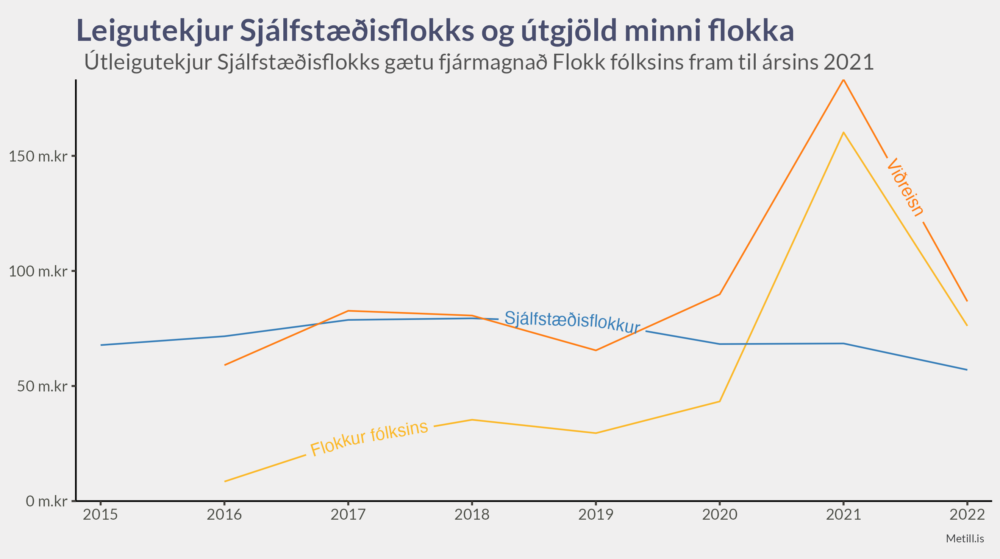
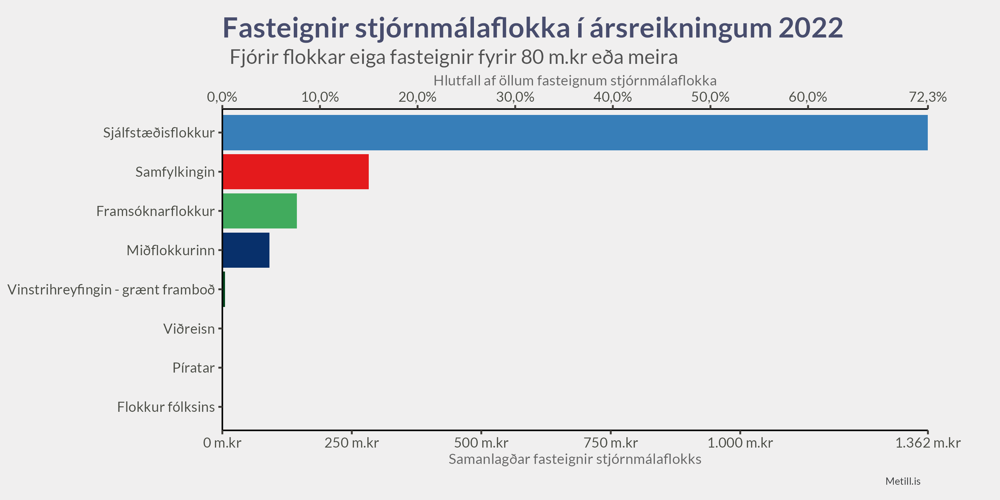

Fyrirvari
- Allar fjárhæðir eru sýndar á föstu verðlagi samkvæmt nýjustu gögnum Hagstofu um vísitölu neysluverðs
Opinber framlög
Stjórnmálasamtök sem hafa fengið a.m.k. einn mann kjörinn á þing eða náð að lágmarki 2,5% atkvæða eiga rétt til framlaga. Það framlag skiptist hlutfallslega milli flokka eftir atkvæðamagni í næstliðnum kosningum. Fjármála- og efnahagsráðuneytið fer með framkvæmd greiðslna á þessu framlagi.
Sveitarfélag skal veita stjórnmálasamtökum, sem fengið hafa a.m.k. einn mann kjörinn í sveitarstjórn eða hlotið hið minnsta 5% atkvæða í næstliðnum sveitarstjórnarkosningum, árleg fjárframlög til starfsemi sinnar. Gilda hér um ákvæði 2. mgr. 5.gr. laga nr. 162/2006. Skal framlögum úthlutað í hlutfalli við atkvæðamagn. Miða skal við að greiða 175 kr. á hvern íbúa sem lögheimili á í sveitarfélaginu 1. janúar á ári hverju. Þessi fjárhæð tekur breytingum árlega miðað við vísitölu neysluverðs í október ár hvert og er grunnvísitalan 472,2 stig, m.v. október 2019.
Framlög hins opinbera til stjórnmálaflokka lækkuðu stöðugt frá 2007 til 2017 en hækkuðu svo aftur árið 2018.
Fyrirtæki/lögaðilar og einstaklingar
Venjulegir aðilar (fólk og fyrirtæki) mega styrkja hvern flokk um 550.000 krónur ár hvert, heimildin var hækkuð úr 400.000 með lagabreytingu árið 2018.
Með því að færa músina yfir y-ás er hægt að þysja inn og sjá betur þróun áranna eftir 2007.
Aðrar tekjur
Aðrar tekjur eru meðal annars útleiga á fasteignum (t.d. veislusölum), miðasala á viðburði, sala á auglýsingaplássi, eða önnur útseld þjónusta. Örfáir flokkar hafa slíkar tekjur, en Sjálfstæðisflokkur fær meirihluta slíkra tekna. Árið 2021 voru tekjur flokksins af sölu byggingarréttar 340 milljónir króna sem teljast hér inn í aðrar tekjur.
Það er áhugavert að sjá að tekjur Sjálfstæðisflokks af útleigu eru svo miklar að þær myndu nægja til að fjármagna allt starf Flokks fólksins. Ef við tökum með miðasölu á viðburði, auglýsingapláss og selda þjónustu gætu aðrar tekjur Sjálfstæðisflokks fjármagnað flokk Pírata.


Kostnaður
Við sjáum að útgjöld flokkanna aukast á árum sem kosningar fara fram. Varðandi hækkunina árið 2018 miðað við 2017 er gott að hafa í huga, eins og við sáum að ofan, að framlög ríkissjóðs jukust mikið árið 2018.
Eignir, skuldir og eigið fé
Eignir
Eignir geta verið tvenns konar:
Veltufjármunir Þetta er handbært fé eða eignir sem er auðvelt að breyta í peninga. Hjá flestum flokkum eru eignirnar að mestu leyti veltufjármunir, þ.e. uppsafnaðir peningar frá ríkinu og styrktaraðilum.
Fastafjármunir Þetta eru eignir sem er ekki jafn auðvelt að breyta í peninga. Sjálfstæðisflokkur hefur átt kringum 70% allra fastafjármuna flokkanna og eru þeir að mestu leyti fasteignir.
Við sjáum að margir flokkar hafa talsverða veltufjármuni, en örfáir flokkar hafa einhverja fastafjármuni.

Skuldir
Það er ekki nóg að vita bara hverjar eignir flokkanna eru, við viljum líka vita hvort flokkarnir séu fjármagnaðir með lántöku eða hreinum eignum.
Eigið fé
Með þekkingu okkar um eignir og skuldir að vopni getum við skoðað eigið fé flokkanna og fengið svör við spurningunni
Hverjar eru eignirnar umfram skuldirnar?
Við sjáum til dæmis að Framsóknarflokkur hefur haft neikvætt eigið fé frá 2007 til 2020 og að Viðreisn hafði skuldir umfram eignir í ársreikning ársins 2021.
Auk þess sjáum við að árið 2007 átti Sjálfstæðisflokkur 100% alls eigin fjár stjórnmálaflokka, minnkaði hægt niður í 43,5% árið 2020, en með sölu byggingarréttar árið 2021 hefur hlutfallið hækkað aftur upp í 79,2%.